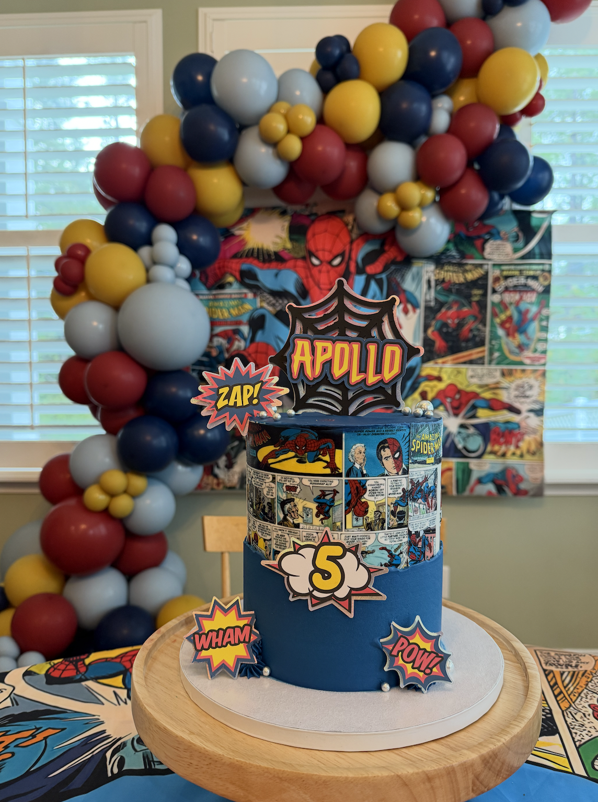
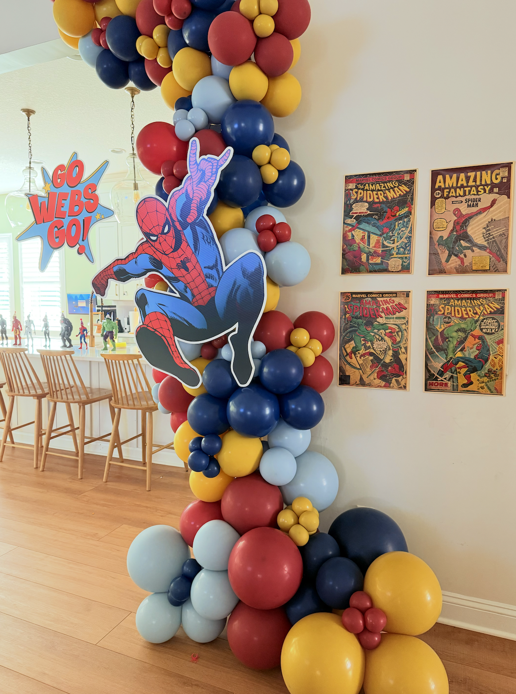
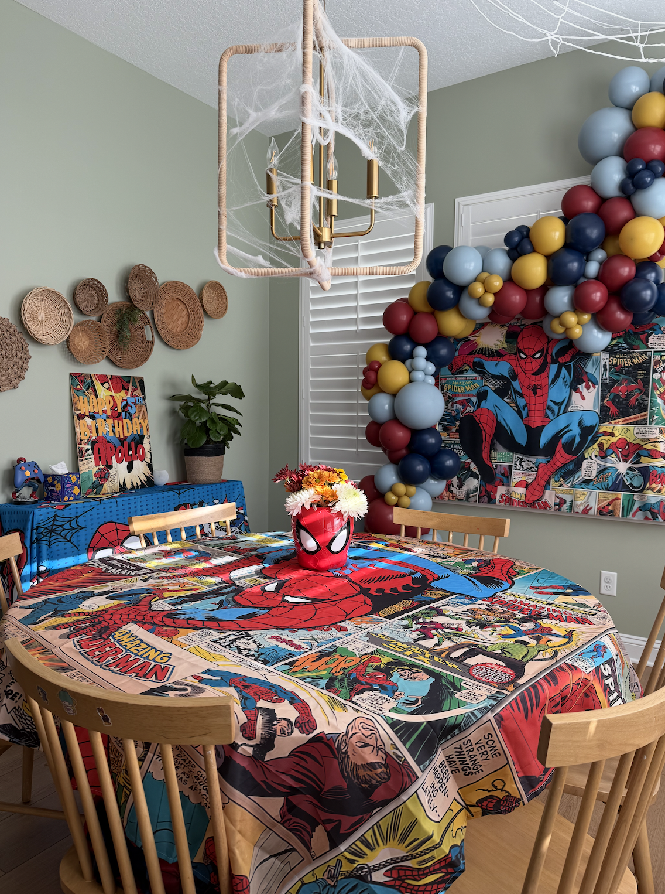

When it comes to Spider-Man-themed parties, the decorations often lean heavily on the bold, primary colors associated with the superhero—red, blue, and yellow. While these vibrant hues are iconic, creating a custom look tailored to a vintage Spider-Man theme requires a more refined approach to color theory. For a recent project, I designed a party that stayed true to Spider-Man’s classic appeal while introducing a custom palette that perfectly matched my client’s vision.

Step 1: Creating the Custom Color Palette
The client wanted to incorporate Spider-Man’s essence but with a vintage flair, moving away from overly saturated tones. To achieve this, I used color theory to blend muted shades of red, navy, mustard yellow, and a soft, smoky blue. These tones provided a nostalgic yet cohesive look that captured the retro comic book style.
Customizing the color palette was critical because standard Spider-Man party supplies often use strong, primary colors that may not suit every aesthetic. By carefully balancing the hues, I ensured the decorations had a cohesive flow, from the balloons to the table settings.

Step 2: Designing Custom Content
The design process involved creating custom files that complemented the chosen palette. This included personalized printables, such as the backdrop featuring vintage Spider-Man comic panels, and themed labels for the cake and other party elements. Each element was curated with the client’s preferences in mind while maintaining the party's cohesive vintage look.
Step 3: Balloon Garlands and Backdrops
The balloon garlands were a highlight of the party, incorporating the custom colors. By combining various shades of balloons in mustard yellow, navy, red, and smoky blue, we created arches that framed key areas, such as the cake table and photo wall. These garlands added dimension and depth while tying the room together.
The backdrop featured authentic Spider-Man comic art, printed in slightly desaturated tones to match the custom color palette. This detail reinforced the vintage theme and became a stunning focal point for photos.

Step 4: Table Settings and Decor
For the table decor, I layered elements to create visual interest. The tablecloth featured comic panels, while a Spider-Man-themed centerpiece added height and character. Fresh flowers in the same palette were arranged in Spider-Man-themed containers, adding a soft, playful touch.
Step 5: Bringing the Vision to Life
Designing this party required attention to detail and a deep understanding of how colors interact. By creating a custom palette and meticulously planning every element, we transformed a standard Spider-Man theme into an elevated vintage celebration. The result was a unique, visually stunning party that perfectly reflected the client’s vision while staying true to Spider-Man’s timeless charm.
Final Thoughts
Curating a custom party design involves more than just picking a theme—it’s about reimagining classic ideas to create something truly one-of-a-kind. With the help of color theory and thoughtful design, we turned a bold superhero theme into a stylish, vintage celebration..
← Back to Portfolio